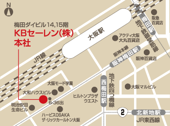
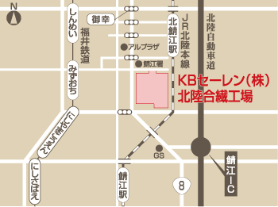
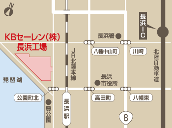
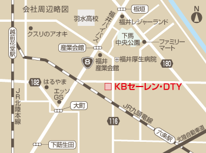
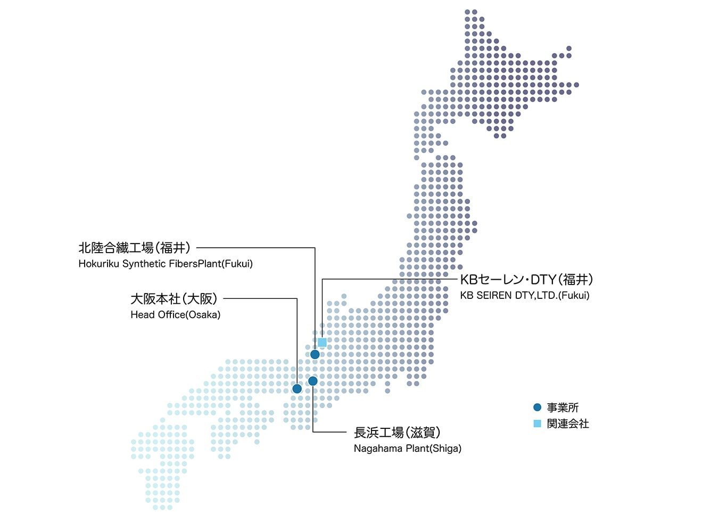

| 代表者 | 代表取締役会長 川田 達男（セーレン(株) 代表取締役会長） 代表取締役社長 寺前 勝基 |
|---|---|
| 事業内容 | 合成繊維の製造及び販売、繊維素材の編立・加工及び販売、左記繊維二次製品の製造・販売 |
| 設立 | 2005年5月2日 |
| 資本金 | 34億4千万円 |
| 株主 | セーレン株式会社100% |
| 年商 | 147億円（2025年3月現在） |
| 従業員数 | 437名（2025年3月現在） |
| 主力銀行 | 北陸銀行 三菱東京UFJ銀行 みずほ銀行 |
| 企業案内 | 電子カタログはこちら |
大阪本社
〒530-0001
大阪市北区梅田3-3-10 梅田ダイビル 14・15階
TEL：06-6345-5454

北陸合繊工場
〒916-0038
福井県鯖江市下河端町6-1-1
TEL：0778-51-5350

長浜工場
〒526-0068
滋賀県長浜市鐘紡町1-11
TEL：0749-63-0700


